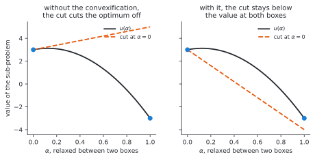
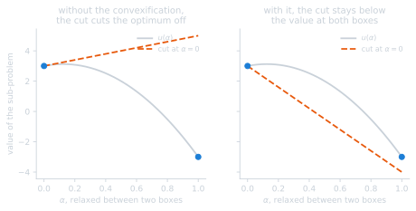
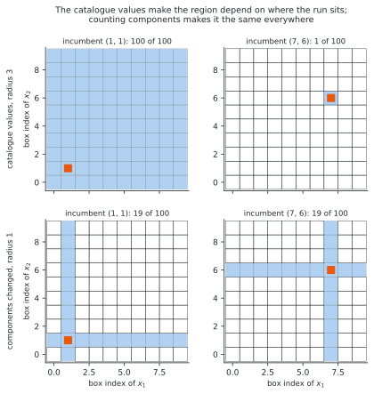

Annex C: tuning the master#
The results were obtained with tuned settings. This annex describes how they were determined and the effect of each setting: the two mechanisms that keep the cuts valid, the sweep that avoids choosing between their values, the trust region that limits the region searched by the master, the two limits that terminate a run, and the dependence of these settings on the size of the boxes.
All experiments use the problems of annex A, with eight starting points in two dimensions and three in five; the conclusions apply to these landscapes and are not general rules.
The two convexity mechanisms#
Outer-approximation cuts are supporting hyperplanes only if the value function is convex. On a multimodal problem it is not, and the master provides two distinct mechanisms to keep its cuts usable. They rely on different arguments and are evaluated separately.


Figure C.1. A cut that overestimates the value at the next box.
convexificationadds to the objective a convex term that vanishes at the integer points. Once its constant dominates the concavity of the relaxed problem, the relaxation is convex and the outer approximation converges. Controlled by
convexification_constant, withadaptdisabled.adaptivecorrects the slope of each cut by least squares using the pairs of points already evaluated, so that no cut overestimates an observed value. Controlled by
adaptand the convexity marginmin_dfk, without convexification constant.
Adaptive repair#
Table C.1 reports the results on Rastrigin with ten subdivisions per variable and no convexification constant, in two variables, from eight starting points, with a budget of \(1000\): number of starting points from which the optimum is reached and median cost.
parallel points |
|
10 |
30 |
100 |
300 |
|---|---|---|---|---|---|
1 |
0/8 |
0/8 |
2/8 |
6/8 (294) |
5/8 (294) |
4 |
1/8 |
5/8 |
7/8 |
8/8 (543) |
8/8 (550) |
8 |
1/8 |
1/8 |
8/8 (907) |
8/8 (1000) |
7/8 (1000) |
Table C.1. Adaptive repair on Rastrigin, \(n = 2\).
Two settings matter.
Number of parallel points. The master probes one trust-region radius per point,
over geomspace(step / 2, step), so that a feasible master problem remains
available. Four points reach the optimum from all starting points; a single point
from six of eight; eight points from all starting points but at nearly twice the
cost, the budget being spent on probes rather than boxes. The choice of four is
therefore a matter of cost rather than feasibility. With the earlier trust region
based on the catalogue values, a single point stopped a run after two or three
boxes; this was due to the metric, not to the probing.
Convexity margin. min_dfk is subtracted from a difference of objective values,
so that it is an absolute quantity in the units of the objective. Its effect
increases up to a threshold and then saturates: for an objective with a range of
about eighty, the optimum is reached from one starting point with a margin of \(1\),
five with \(10\), seven with \(30\) and all eight with \(100\) and \(300\). Table C.2
shows the same behaviour in five variables.
|
1 |
10 |
30 |
100 |
300 |
|---|---|---|---|---|---|
Rastrigin, \(n=5\) |
\(17.91\) · 0/3 |
\(5.11\) · 0/3 |
\(0.00\) · 2/3 |
\(0.00\) · 3/3 |
\(0.00\) · 3/3 |
Ackley, \(n=5\) |
\(8.99\) · 0/3 |
\(4.95\) · 1/3 |
\(4.95\) · 0/3 |
\(6.30\) · 0/3 |
\(7.23\) · 1/3 |
Table C.2. Median distance and number of starting points reaching the optimum against the convexity margin, \(n = 5\).
An overestimated margin costs sub-problems rather than quality, so that the default is set to the first saturating value. On Ackley, whose objective has a range of about twenty-two instead of eighty, the most useful margin is the smallest one tested, which illustrates that the margin depends on the units of the objective.
Pure convexification#
The constant must dominate the non-convexity of the relaxed problem, but not much more: beyond that, every unexplored box ranks before the incumbent regardless of the cuts, the ranking of the boxes becomes uninformative, and the method tends towards the enumeration. Unlike the convexity margin, the constant therefore has a useful range bounded on both sides.
Table C.3 gives the results on Rastrigin with the same protocol, adapt
disabled and one parallel point.
constant |
10 |
30 |
50 |
100 |
200 |
|---|---|---|---|---|---|
\(n=2\), budget \(1000\) |
\(6.97\) · 0/8 |
\(0.00\) · 6/8 (456) |
\(0.00\) · 5/8 |
\(0.00\) · 6/8 (466) |
\(0.50\) · 4/8 |
\(n=5\), budget \(2500\) |
\(33.41\) · 0/3 |
\(30.84\) · 0/3 |
\(0.00\) · 2/3 |
\(1.92\) · 0/3 |
\(9.09\) · 0/3 |
Table C.3. Pure convexification on Rastrigin.
The useful range narrows as the dimension increases. In two variables a factor of three on the constant has little effect, and the optimum is reached from five or six starting points of eight. In five variables only the constant \(50\) reaches it, the smaller values leaving the cuts invalid and the larger ones making the ranking uninformative. On Ackley the best constant is \(100\), with much worse results at \(200\).
The adaptive repair reaches the same optima from eight starting points of eight in two variables and three of three in five, so that the pure convexification is dominated on these problems. It is retained because it corresponds to the theoretical argument of the outer approximation and requires no observed pairs, but it is not the default.
The useful constants are of the order of the variation of the objective over the design space, as is the convexity margin of the adaptive repair: both mechanisms are calibrated against the non-convexity they must dominate, and neither is dimensionless.
The cost does not increase with the constant: an excessive constant brings no improvement at about the same cost, because the run terminates on one of the two limits described below rather than on its optimality test. A large constant is therefore not a safe default.
Termination of the runs#
Instrumenting the master problem shows why the constant cannot be increased to the range where its guarantee applies.
The constant degrades the lower bound. The optimum \(\eta\) of the master is \(-996\)
for a constant of \(1000\) and \(-9991\) for \(10^4\), i.e. \(\eta \approx -\kappa\). The
convexification tilts each cut by \(\pm\kappa / n_{\text{comp}}\) per component, and
the relaxed master exploits this tilt. The gap
\(\mathrm{ub} - \mathrm{lb} \approx \mathrm{ub} + \kappa\) therefore never closes,
and the convergence test on ub_tol is never satisfied. The guarantee is valid
but not attained, the algorithm never obtaining the certificate that would allow
it to stop on optimality.
The run therefore terminates on a heuristic limit: either the trust region shrinks until the master becomes infeasible, as described in the next section, or, when the trust region is inactive, the stall counter is reached:
MILP : Stalling iterations: 10/10.
The Upper bound stopped changing for 10 iterations.
upper_bound_stall defaults to ten: the master stops after ten iterations without
improvement of the incumbent, whatever its lower bound. With one box solved per
iteration, this limits a run to a few dozen boxes out of a hundred, as observed in
the
comparison with the enumeration:
between twenty and thirty-six boxes are solved, whatever the constant.
Increasing the constant thus no longer increases the exploration: since the run terminates on one of these limits and never on the optimality test, the exploration is determined by the limits, and the constant only determines how well the cuts rank the boxes visited before. Removing the limits to recover the guarantee would require solving the sub-problems that the outer approximation is designed to avoid, as in the enumeration.
Two implementation changes would follow, neither of which is made here: restoring
the step towards max_step and retrying before stopping on an infeasible master,
and reporting the lower bound without the convexification term, which vanishes at
the integer points and would make the gap meaningful.
Swept convexity#
The convexity margin and the convexification constant are absolute quantities in the units of the objective, and the suitable value is of the order of the variation of the objective over the design space, which is unknown to the user. A margin of \(100\) reaches the optimum from all starting points on Rastrigin, whose range is about eighty, and gives the worst result among the tested values on Ackley, whose range is about twenty-two.
The master already avoids choosing its trust-region radius: it probes one radius
per parallel point over geomspace(step / 2, step), so that the parallel points
form a sweep. The same probes can carry a ladder of convexity values:
probe \(k\) of an iteration solves the master with rung \(k\) of a ladder \(\kappa_1 < \dots < \kappa_N\), geometric over two decades below its upper bound. The two ladders are paired, the small trust region with the raw cuts and the large one with the dominated cuts, so that an iteration returns both an exploitative and an exploratory box;
a probe whose rung proposes a box already solved is moved to the next rung, until it proposes a new box or the ladder is exhausted. A higher rung changes the cuts, which moves the master to another region, whereas the existing elimination constraint only selects the next best box under the same cuts. Each step costs one mixed-integer solution and no objective evaluation;
the exhaustion of the ladder by all probes is the stopping criterion: no value up to \(\kappa_{\max}\) proposes an unsolved box.
The user then supplies only an upper bound: the number of rungs \(N\) equals the number of parallel points, since probe \(k\) takes rung \(k\). An overestimated bound is less harmful than an overestimated single margin, because the low rungs remain in the ladder.
Note
The sweep is implemented in the master, in gemseo-bilevel-outer-approximation,
through the settings convexity_sweep_points and convexity_sweep_max. This
package provides SweptBoxSubdivisionSettings, which
is translated into these two settings, and a driver that performs the sweep from
outside for master versions that do not implement it, so that the measurements
below can be reproduced with both.
Results#
Table C.4 reports the results on Rastrigin and Ackley in two dimensions with ten subdivisions, a budget of \(1000\), six starting points and the adaptive repair: median distance, median cost and number of starting points from which the optimum is reached. The first three rows correspond to a manual calibration of the margin; the swept rows use no margin.
convexity |
Rastrigin, range \(\approx 80\) |
Ackley, range \(\approx 22\) |
|---|---|---|
fixed, margin \(1\) |
\(2.487\) · 91 · 1/6 |
\(10.415\) · 188 · 1/6 |
fixed, margin \(10\) |
\(0.000\) · 226 · 4/6 |
\(10.415\) · 208 · 1/6 |
fixed, margin \(100\) |
\(0.000\) · 543 · 6/6 |
\(0.000\) · 428 · 4/6 |
sweep, \(\kappa_{\max} = 100\) |
\(0.000\) · 491 · 6/6 |
\(0.000\) · 517 · 6/6 |
sweep, \(\kappa_{\max} = 1000\) |
\(0.000\) · 532 · 6/6 |
\(0.000\) · 534 · 4/6 |
sweep, observed spread |
\(0.000\) · 361 · 6/6 |
\(3.814\) · 315 · 3/6 |
sweep, observed spread \(\times 10\) |
\(0.000\) · 489 · 6/6 |
\(0.000\) · 601 · 6/6 |
Table C.4. Fixed and swept convexity, \(n = 2\).
No fixed margin reaches the optimum of both problems from all starting points. The best fixed margin, \(100\), reaches Ackley from four starting points of six, and the sweep with the same bound from six. The sweep is also less sensitive to its bound: a bound ten times too large costs \(532\) evaluations against \(491\) on Rastrigin without changing the number of starting points reaching the optimum, whereas a margin ten times too small reaches it from one of six. On Ackley the overestimated bound does lose two starting points, \(4/6\) against \(6/6\).
Bound derived from the objective#
The last two rows require no value from the user. Both mechanisms are calibrated against the non-convexity they must dominate, of the order of the variation of the objective over the design space, which the master observes as it solves boxes. The upper bound \(\kappa_{\max}\) can thus be taken as the spread of the objective over the boxes already solved.
Used directly, this estimate reaches the optimum of Rastrigin from all starting points for \(361\) evaluations, the lowest cost of Table C.4, but gives a distance of \(3.814\) on Ackley, from three starting points of six. The spread over the boxes already solved underestimates the spread over the design space, particularly in the first iterations, when few boxes have been solved. On a landscape whose first boxes are similar, such as the broad basin of Ackley, the estimate is too small to produce the exploration that would correct it.
A headroom factor of ten on the observed spread corrects this without penalty on the other problem: Ackley is solved from six starting points of six, and Rastrigin from six of six for \(489\) evaluations, against \(543\) with the calibrated margin. This factor is dimensionless and therefore transfers between problems, unlike an absolute margin.
Warning
The factor of ten was chosen on these two problems and is subject to the same restriction as the other defaults of this annex. Table C.4 establishes the bounded sweep over bounds spanning a factor of ten, and shows that the unbounded sweep works on both problems with this headroom; two problems in two dimensions do not establish the value of the factor.
Note
Table C.4 was obtained with the sweep performed by the master. When the sweep is driven by this package around a master that does not implement it, all Rastrigin rows are identical and three Ackley rows differ by one or two starting points: \(5/6\) instead of \(6/6\) with \(\kappa_{\max} = 100\), \(5/6\) instead of \(4/6\) with \(\kappa_{\max} = 1000\), and \(1/6\) instead of \(3/6\) without headroom. The external driver cannot act on the solutions the master computes outside its probing loop, which explains the difference. The conclusions are unchanged.
Limitations of the sweep#
The sweep does not restore the optimality test. A probe at a high rung returns a lower bound degraded by its convexification, and the master retains the smallest bound among the probes, so that the gap \(\mathrm{ub} - \mathrm{lb}\) does not close: the run still terminates on the trust region or on the stall counter. The sweep replaces the calibration, not the certificate.
The sweep does not allow the two mechanisms to be combined either: it varies
min_dfk with adapt enabled, or convexification_constant with adapt
disabled, never both.
The sweep requires more than one parallel point; Table C.4 uses the adaptive repair with four. With a single probe there is no ladder, and the highest rung is used, the conservative end. This matters for the pure convexification, which is configured here with a single point: swept with one probe it gives the same result as the calibrated constant, \(0.995\) for \(335\) evaluations against \(0.995\) for \(304\), and swept with four probes it reaches the optimum for \(553\) evaluations where the calibrated constant requires \(937\). This is a single starting point and does not constitute a measurement; since the constant has a bounded useful range, the ladder may behave differently in that case. Table C.4 establishes the sweep of the adaptive repair only.
Trust region and metric#
The master restricts each iteration to a neighbourhood of the incumbent box,
determined by the metric, set by the catalogue weights of the design space, and
by the radius max_step. The metric was incorrect during most of the development
of this package, and all experiments of this annex were repeated after its
correction.
Constraint#
The trust region is the linear constraint
so that a candidate is charged \(w_j(\alpha)\) for each changed component, where \(w_j(\alpha)\) is the weight of the incumbent. The interval reached does not appear in the expression.
CatalogueDesignSpace sets the weights of a numeric catalogue to the catalogue
values, and the catalogue of a subdivided variable is the range of its interval
indices, so that the design spaces of this package initially used
x_box weights = [0, 1, 2, 3, 4, 5, 6, 7, 8, 9]
This does not define an ordinal proximity. Leaving the first interval of a
component costs nothing and leaving the last one costs \(m_j - 1\), wherever the
candidate moves. The region is asymmetric rather than local: from the incumbent
\((0,0)\) of a \(10\times10\) subdivision with max_step \(3\), all \(100\) boxes are
admitted; from \((7,6)\), only the incumbent itself, already removed by the
elimination constraints, so that the master becomes infeasible and the run stops
for reasons unrelated to the problem. This has been reported upstream.


Figure C.2. Trust region of the same radius from two incumbents, with index weights and with unit weights.
The design spaces of this package now set all weights to one, so that the distance is the number of components changed by a candidate.
Comparison of the metrics#
Table C.5 compares four metrics in two variables with ten subdivisions, a budget
of \(1000\) and eight starting points. indexes is the former default based on the
catalogue values, unit the Hamming distance now used, none sets all weights to
zero so that the constraint is inactive, and proximity replaces the constraint
by \(|v^\top\alpha' - v^\top\alpha| \le \texttt{max\_step}\) on the catalogue values
\(v\), implemented in the master by the stub of benchmarks/trust_region.py.
metric |
Rastrigin |
Ackley |
Griewank |
|---|---|---|---|
|
\(0.000\) · 798 · 8/8 |
\(0.000\) · 450 · 6/8 |
\(0.027\) · 1000 · 0/8 |
|
\(0.000\) · 530 · 8/8 |
\(0.000\) · 450 · 6/8 |
\(0.027\) · 1000 · 0/8 |
|
\(0.000\) · 543 · 8/8 |
\(0.000\) · 560 · 6/8 |
\(0.007\) · 618 · 0/8 |
|
\(0.000\) · 452 · 8/8 |
\(0.000\) · 496 · 8/8 |
\(0.007\) · 526 · 0/8 |
|
\(0.000\) · 810 · 8/8 |
\(0.000\) · 450 · 6/8 |
\(0.027\) · 1000 · 0/8 |
|
\(0.000\) · 822 · 8/8 |
\(0.000\) · 487 · 7/8 |
\(0.007\) · 1000 · 0/8 |
|
\(0.000\) · 990 · 8/8 |
\(0.000\) · 753 · 8/8 |
\(0.007\) · 1000 · 0/8 |
Table C.5. Comparison of the trust-region metrics, \(n = 2\).
The unit metric with a radius of one gives the best result in every column: it is the only configuration reaching Ackley from all eight starting points, the least expensive on Rastrigin, and the closest on Griewank, which no configuration solves.
The ordinal proximity, described in the upstream documentation, also reaches Ackley from eight starting points when its radius is small, but for \(753\) evaluations against \(496\); on Rastrigin it reaches the optimum from all starting points with both radii, for \(822\) or \(990\) evaluations against \(452\). The reliability is therefore due to a small neighbourhood, which is expressed at lowest cost by counting components. The ordinal interpretation of the interval indices brings no improvement on a multimodal landscape, where a neighbouring box is no more similar than a distant one: the multimodality behaves as a categorical rather than an ordinal choice.
Radius of the trust region#
Table C.6 gives the results in five variables with ten subdivisions, a budget of \(2500\) and three starting points.
radius |
Rastrigin |
Ackley |
Styblinski-Tang |
Griewank |
|---|---|---|---|---|
1 |
\(0.000\) · 1230 · 2/3 |
\(4.95\) · 2500 |
\(0.000\) · 497 · 1/3 |
\(0.025\) · 2500 |
2 |
\(0.000\) · 2103 · 3/3 |
\(6.30\) · 2500 |
\(14.14\) · 598 · 1/3 |
\(0.027\) · 2500 |
3 |
\(0.995\) · 1895 · 1/3 |
\(7.08\) · 2500 |
\(0.000\) · 951 · 2/3 |
\(0.025\) · 2500 |
5 |
\(0.000\) · 2500 · 2/3 |
\(14.93\) · 2500 |
\(0.000\) · 1026 · 2/3 |
\(0.111\) · 2500 |
Table C.6. Effect of the trust-region radius, \(n = 5\).
The radius must be small. The distance on Ackley increases monotonically with the
radius, and Rastrigin gives the best results with a radius of two, from all
starting points. With six starting points, the same Rastrigin configuration
reaches the optimum from six of six for \(1920\) evaluations, against three of six
with a radius of five, two of six with the diameter of the design space and one
of six without trust region. The default radius is therefore two
(TRUST_REGION_RADIUS).
Warning
Styblinski-Tang is an exception: at this density a radius of two is its worst setting, with a distance of \(14.14\) against \(0.000\) for radii of one, three and five. The same configuration stands out in the density study below. The default radius is a good average over these problems and not a general rule; when the runs of a problem stop early, the neighbouring radii should be tested first.
Disabling the shrinking of the trust region, by setting
step_decreasing_activation above the number of iterations, does not help: the
run then terminates on the stall counter, reaching the optimum from six starting
points of eight for \(\kappa = 100\), with identical results for index and unit
weights, which indicates that the trust region is inactive in both cases. The two
limits replace each other, so that neither the constant nor the radius alone
recovers the guarantee.
Settings in five variables#
The mechanisms were tuned in two dimensions, and the results do not transfer unchanged. In five variables the most influential setting is the density of the subdivision, studied in the results; the mechanism comes second, and the two interact.
The density can also be estimated from the landscape: counting the basins along jittered axial scans proposes a density, which on all problems whose count converged coincides with the better of the two densities compared in this annex, see the proposed density. The proposal fixes the density but not the mechanism, whose effect at each density is given below.
Mechanism at the two densities#
Table C.7 compares the two mechanisms with a budget of \(2500\), three starting points and the default trust-region radius of two.
problem |
\(m\) |
adaptive |
pure convexification |
|---|---|---|---|
Rastrigin |
2 |
\(4.98\) · 823 |
\(4.98\) · 504 |
Rastrigin |
10 |
\(0.00\) · 2103 · 3/3 |
\(1.92\) · 1407 |
Ackley |
2 |
\(14.43\) · 892 |
\(14.43\) · 335 |
Ackley |
10 |
\(6.30\) · 2500 |
\(4.95\) · 2500 · 1/3 |
Styblinski-Tang |
2 |
\(0.00\) · 458 · 2/3 |
\(0.00\) · 294 · 3/3 |
Styblinski-Tang |
10 |
\(14.14\) · 598 · 1/3 |
\(14.14\) · 421 |
Griewank |
2 |
\(0.06\) · 1016 |
\(0.06\) · 568 |
Griewank |
10 |
\(0.03\) · 2500 |
\(0.13\) · 1477 |
Table C.7. Adaptive repair and pure convexification at two densities, \(n = 5\).
The pure convexification is consistently less expensive and usually not worse: when both mechanisms reach the same result, it requires between a third and two thirds of the cost, and on Styblinski-Tang with the coarse subdivision it is better, reaching the optimum from three starting points of three against two, for \(294\) evaluations against \(458\).
The mechanisms differ on the case the method is intended for: on Rastrigin with ten subdivisions, the adaptive repair reaches the optimum from all starting points and the convexification does not reach it. This justifies the higher cost of the adaptive repair, \(2103\) evaluations against \(1407\), and its choice as default.
Interaction between density and mechanism#
Refining improves Rastrigin and degrades Styblinski-Tang. From two to ten subdivisions, Rastrigin goes from a distance of \(4.98\), with no starting point reaching the optimum, to \(0.00\) from all starting points, and Styblinski-Tang from \(0.00\) and two of three to \(14.14\) and one of three, with both mechanisms. This is therefore a property of the subdivision rather than of the master: Styblinski-Tang has two basins per variable, ten subdivisions divide each basin into five boxes, and a box without its own minimum provides a value and a sensitivity that carry no information on the location of the minimum. Refining beyond the basins degrades the ranking of the boxes.
Ackley improves with refinement under both mechanisms, from \(14.43\) to \(6.30\) and from \(14.43\) to \(4.95\), but its optimum is reached at most once out of three. Its single broad basin over a range of sixty is not resolved by any density of this study; the deep hierarchy of annex D is the only configuration that resolves it.
Hierarchies and refinement rules#
Instead of a single fine subdivision of the whole space, a hierarchy subdivides coarsely, ranks the boxes and refines the most promising ones, applying the method again within the bounds of one box. The product of the subdivisions gives the resolution, so that two levels of two and five give the resolution of a flat subdivision into ten, and the budget is concentrated instead of being spread over \(10^5\) boxes.
The results depend on the rule selecting the box to refine. Three rules were
evaluated in benchmarks/hierarchy.py:
valuerefines the boxes whose sub-problem returned the best value. It can only select boxes already solved, a few dozen, whose score is a single local solution started at the centre of the box.
cutsrefines the boxes with the lowest score according to the cut model of the master, \(\hat u(\alpha) = \max_i u(\alpha^{(i)}) + s^{(i)\top}(\alpha - \alpha^{(i)})\), which is defined at every box, including the unsolved ones. Being optimistic, it extrapolates downwards far from the solved boxes, and therefore ranks distant unexplored boxes first.
mixedone box from each ranking alternately.
Table C.8 gives the results in five variables, with a budget of \(2500\) shared between the levels and six starting points: median distance to the optimum and number of runs reaching it.
method |
Rastrigin |
Ackley |
Styblinski-Tang |
|---|---|---|---|
flat \(m=2\) |
\(4.98\) |
\(14.43\) |
\(0.00\), 5/6, 486 |
flat \(m=10\) |
\(0.00\), 6/6, 1920 |
\(6.30\)† |
\(0.00\), 1/6, 532 |
2 then 5, |
\(4.98\) |
\(6.30\) |
\(0.00\), 5/6, 872 |
2 then 5, |
\(2.45\) |
\(8.11\) |
\(0.00\), 5/6, 987 |
deep, 4 levels of 2, |
\(4.98\) |
\(0.00\), 4/6, 2387 |
\(0.00\), 5/6, 1494 |
frontier, 10 expansions, optimistic |
\(6.70\)† |
\(9.71\)† |
\(0.00\), 6/6, 2500† |
frontier, 10 expansions, greedy |
\(25.87\)† |
\(9.71\)† |
\(0.00\), 6/6, 2500† |
frontier, 20 expansions, optimistic |
\(8.43\)† |
\(9.71\)† |
\(0.00\), 6/6, 2500† |
Table C.8. Hierarchies of subdivisions, \(n = 5\). † stopped by the budget; the distance is an upper bound. The frontier expands boxes until the budget is spent and is therefore always stopped by the budget.
The deep hierarchy, dividing each variable in two at each of four levels and refining the best box by its value, reaches the optimum of Ackley in five dimensions from four starting points of six, with a median distance of zero, whereas the flat subdivision at its best density reaches it from two even with four times the budget. It also terminates on its own criterion, after \(2387\) evaluations, unlike the flat run with \(m=10\).
On the other problems it performs worse: on Rastrigin it gives \(4.98\), whereas the flat subdivision reaches the optimum from all starting points, and on Styblinski-Tang it reaches the optimum as often as the coarse flat subdivision for three times the cost.
A descending hierarchy cannot backtrack: the box refined at one level is the only region seen by the next level, so that the errors of an unreliable score accumulate. Consequently:
cutsimproves the results where the observed values are unreliable (Rastrigin, from \(4.98\) to \(2.45\)) and degrades them where they are informative (Ackley, from \(6.30\) to \(8.11\)): an optimistic model favours exploration, which is detrimental when the ranking already designates the correct region;the frontier, the only shape able to return to a box previously passed over, performs worst on Rastrigin, \(6.70\) optimistic and \(25.87\) greedy, and more expansions degrade it further, \(8.43\) with twenty. Backtracking does not compensate for the loss of the model: each node restarts a master with few cuts, and this shape creates the largest number of nodes.
The poor performance of the frontier is significant because it is the natural next step: a best-first search over the boxes of all levels, scored by the cut model, corresponds to the spatial branch-and-bound suggested by these shapes. A hierarchy does not lack the ability to revise a choice, but a model on which to base it, and each additional node makes this model weaker. The construction that keeps a single model over all levels is the multi-resolution encoding.
The hierarchy is therefore not a default, but it is the only construction of this study that reaches the optimum of Ackley in five variables from more than two starting points.
Note
The two-level hierarchy was motivated by the statistics of the cut model but does not improve them: its fine level has \(n \times m\) coefficients for the twenty or so cuts a budget allows, as in the flat case. Only the deep hierarchy improves this ratio, with \(2n\) coefficients per level, and it gives the result above.
Subdivision of a subset of the variables#
Since the number of boxes is the product of the subdivisions, subdividing only the variables that require it keeps the master small, the other variables remaining continuous variables of the sub-problem:
subdivision = BoxSubdivision.from_design_space(design_space, 10, ["x_split"])
On the test problems, which are multimodal in all variables, this degrades the results, as shown in Table C.9.
problem |
5 split, \(m=2\) (32 boxes) |
3 split, \(m=4\) (64) |
2 split, \(m=10\) (100) |
1 split, \(m=10\) (10) |
|---|---|---|---|---|
Rastrigin |
\(4.98\) · 823 |
\(9.95\) · 831 |
\(9.95\) · 1765 |
\(18.90\) · 557 |
Styblinski-Tang |
\(0.00\), 2/3 · 458 |
\(14.14\), 1/3 · 853 |
\(28.27\) · 652 |
\(28.27\) · 466 |
Partly multimodal |
\(1.99\) · 540 |
\(0.00\), 3/3 · 773 |
\(0.00\), 3/3 · 858 |
\(3.98\) · 419 |
Table C.9. Subdivision of a subset of the variables, \(n = 5\).
A variable that is not subdivided keeps all its basins within every box, and the local solution returns the basin of its starting point. Styblinski-Tang has two basins per variable, so that leaving three of the five variables undivided leaves eight basins in every box: a configuration reaching the optimum from two starting points of three with thirty-two boxes reaches it from none with a hundred.
On an objective whose multimodality is concentrated, the partly multimodal function (Rastrigin in two variables and a paraboloid in the other three), the partial subdivision performs better, as shown in Table C.10.
subdivision |
boxes |
distance |
cost |
reached |
|---|---|---|---|---|
5 split, \(m=2\) |
32 |
\(1.99\) |
540 |
0/3 |
3 split, \(m=4\) |
64 |
\(0.00\) |
773 |
3/3 |
2 split, \(m=10\) |
100 |
\(0.00\) |
858 |
3/3 |
2 split, \(m=5\) |
25 |
\(1.99\) |
620 |
0/3 |
2 split, \(m=3\) |
9 |
\(1.99\) |
383 |
0/3 |
1 split, \(m=10\) |
10 |
\(3.98\) |
419 |
0/3 |
Table C.10. Partial subdivision of the partly multimodal function, \(n = 5\).
A coarse subdivision of all variables fails from all starting points, whereas a fine subdivision of the multimodal variables succeeds from all of them. The subdivision must separate the basins: the minima of Rastrigin are one unit apart over a range of ten, so that a fine subdivision of these variables succeeds and \(m=5\) or \(m=3\) fail.
The least expensive successful configuration does not subdivide the fewest variables: dividing three variables into four, \(773\) evaluations, is less expensive than dividing two into ten, \(858\), although the latter matches the multimodality of the problem. Sixty-four boxes over three variables give the master a smaller model than a hundred over two, \(12\) binaries against \(20\), and subdividing the third variable costs nothing since a paraboloid is unimodal in every box. The choice is therefore governed by the number of binaries rather than by the number of multimodal variables.
The variables in which the objective is multimodal should thus be subdivided as finely as their basins require, and the others left to the sub-problem. The method does not identify these variables by itself.